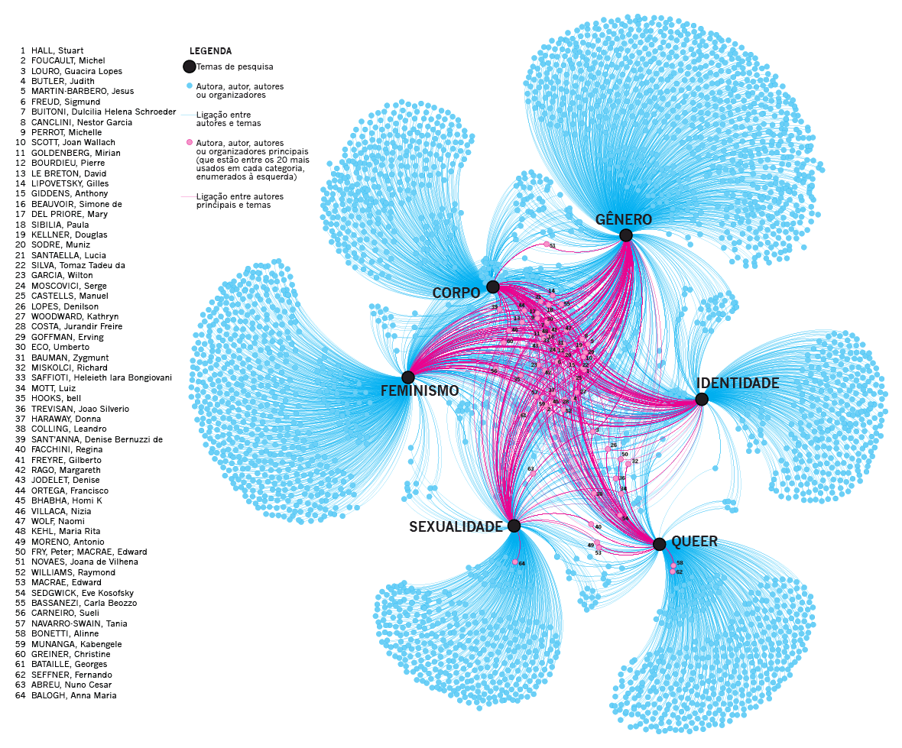
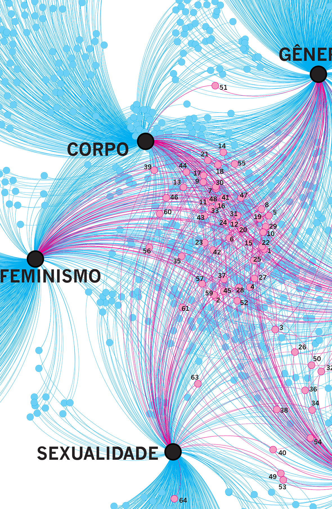
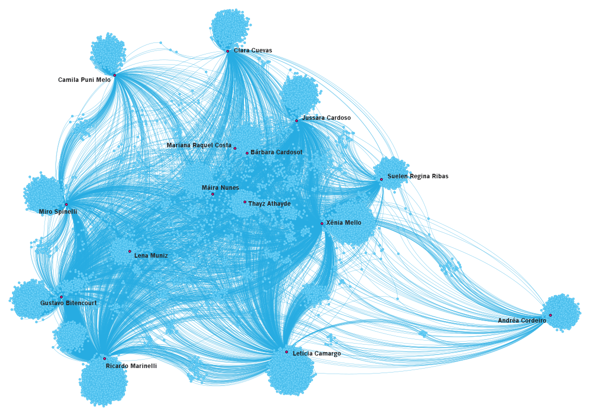
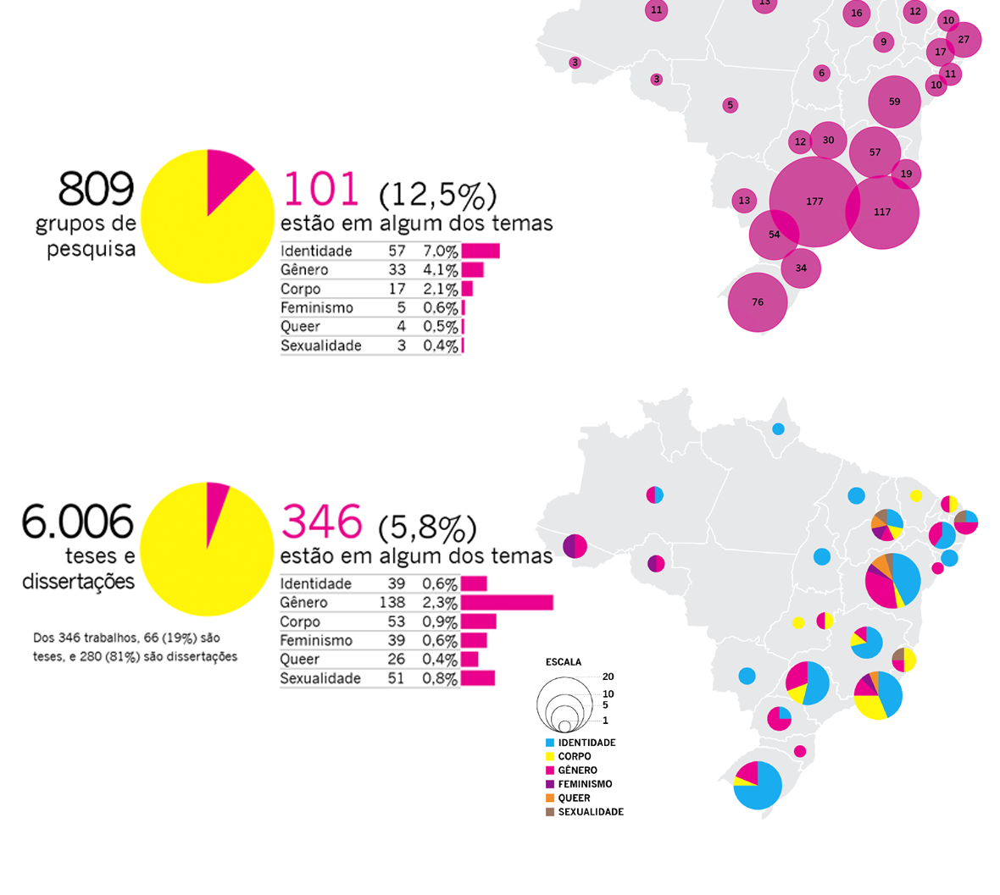

Grafos de análise de redes – bibliografias e relações em redes sociais
Uma das hipóteses da tese da Dra. Máira Nunes era que teses e dissertações brasileiras sobre gênero e sexualidade se apoiam demais em bibliografias de outras áreas. Para confirmar essa hipótese, trabalhei analisando o corpus de aproximadamente 200 teses e dissertações sobre o assunto. Isso implicou em vários passos:
- Separação das bibliografias das teses: usei scripts em Python, com a biblioteca pypdf, para separar as páginas das bibliografias.
- Verificação: conferência manual dos arquivos de texto obtidos.
- Tabulação: separação dos dados em colunas, com Regex, Open Refine, Excel e Open Office. Foi um passo bem trabalhoso, pelas diferentes interpretações das normas da ABNT de cada pesquisador.
- Plotagem: explorar as diferentes visualizações no GePhi.
- Finalização: preparação para a impressão, com cores que usassem tintas puras, no Adobe Illustrator.
Também foi preparada uma versão interativa, para uso da pesquisadora.

Como uma boa visualização de alta densidade, o resultado final pode ser lido em vários níveis, tanto no macro, mais geral, como no micro, observando detalhes e outras relações.

Rede de contatos
Também foi feito um outro grafo, mapeando os grupos de amigos no Facebook das pessoas objetos do estudo. Como o Facebook havia bloqueado o acesso às ferramentas, foi pedido à pesquisadora para abrir as listas de amigos no próprio Facebook e copiasse e colasse tudo em um documento do Word (sim!), que depois foi processado com editores de texto (TextWrangler) e planilhas (Excel) para deixar os dados no formato adequado para o GePhi.

Outros infográficos
A tese também contava com vários outros dados que se beneficiaram dos recursos da infografia.
